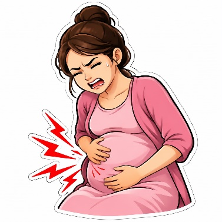
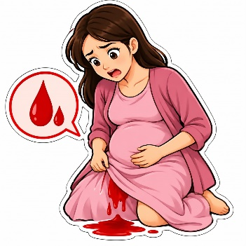
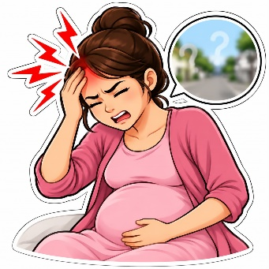
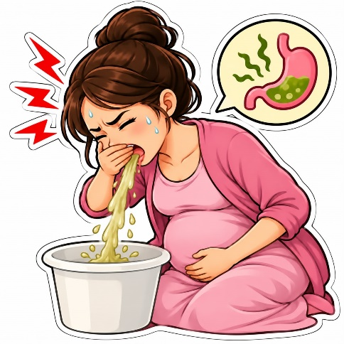
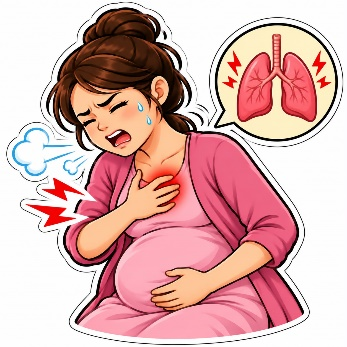
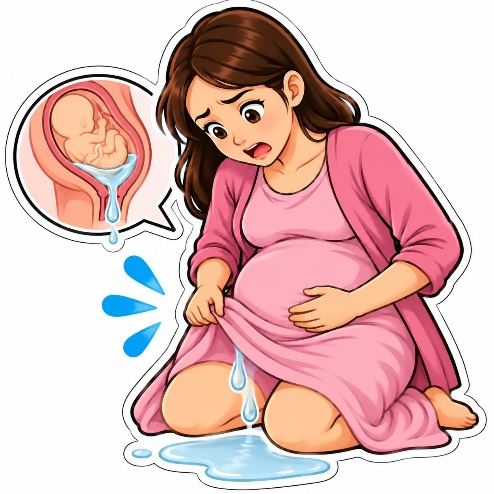
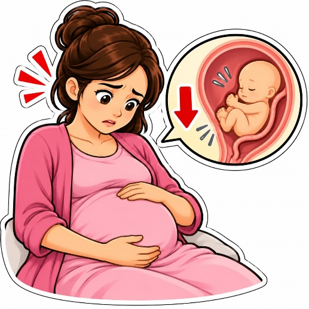
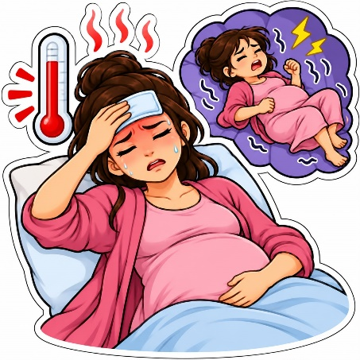

Ibu hamil sering mengalami keluhan seperti mual, muntah, pusing, dan mudah lelah. Sebagian keluhan merupakan hal yang biasa terjadi selama kehamilan. Namun, ada juga keluhan yang bisa menjadi tanda bahaya dan perlu segera diperiksakan ke tenaga kesehatan.
Keluhan yang harus diwaspadai
1. Nyeri perut hebat

Nyeri perut yang sangat kuat, terus-menerus, atau disertai kram berat, terutama jika disertai perdarahan.
2. Keluar darah dari jalan lahir

Perdarahan saat hamil, baik sedikit maupun banyak, perlu segera dinilai oleh tenaga kesehatan.
3. Sakit kepala hebat atau pandangan kabur

Terutama jika disertai bengkak mendadak pada wajah atau tangan, nyeri ulu hati, atau sesak napas. Gejala tersebut dapat berkaitan dengan preeklamsia dan perlu segera dinilai tenaga kesehatan.
4. Muntah terus-menerus

Tidak bisa makan atau minum, urine sangat sedikit, atau tubuh terasa sangat lemas dapat menandakan kekurangan cairan.
5. Sesak napas berat atau nyeri dada

Terlebih jika terjadi mendadak, disertai pingsan, atau jantung berdebar hebat. Cari pertolongan medis segera.
6. Keluar cairan dari jalan lahir

Cairan yang merembes atau mengalir seperti air ketuban, terutama sebelum waktunya melahirkan, harus segera diperiksa.
7. Gerakan bayi berkurang

Jika gerakan bayi sudah biasa dirasakan lalu menjadi jauh lebih sedikit atau tidak terasa, segera hubungi bidan atau rumah sakit. Jangan menunggu sampai besok.
8. Demam tinggi atau kejang

Demam tinggi, kejang, pingsan, atau kondisi tubuh yang memburuk merupakan tanda yang membutuhkan pertolongan segera.
Keluhan yang biasa terjadi dan perlu dibedakan
Tidak semua keluhan berarti kehamilan berbahaya. Mual ringan, mudah lelah, dan lebih sering buang air kecil dapat terjadi selama kehamilan. Namun, jika keluhan terasa berat, semakin parah, atau berbeda dari biasanya, ibu perlu memeriksakan diri.
Apa yang harus dilakukan ibu hamil?
- Segera ke IGD rumah sakit jika mengalami perdarahan, nyeri perut hebat, kejang, sesak napas berat, pingsan, atau sakit kepala hebat disertai gangguan penglihatan.
- Segera hubungi bidan atau dokter jika gerakan bayi berkurang, air ketuban merembes, demam, atau muntah terus-menerus.
- Jangan menunggu jadwal pemeriksaan kehamilan berikutnya jika muncul tanda bahaya.
- Lakukan pemeriksaan kehamilan secara rutin meskipun tidak ada keluhan.
Panduan ini sejalan dengan informasi Kementerian Kesehatan RI dan WHO. Informasi umum tidak dapat memastikan penyebab keluhan atau menggantikan penilaian tenaga kesehatan.
Pesan penting untuk ibu hamil: Jangan takut untuk memeriksakan diri. Lebih baik segera diperiksa daripada terlambat mendapatkan pertolongan. Menjaga kesehatan ibu berarti ikut menjaga keselamatan bayi.
Catatan kesehatan: Artikel ini bersifat edukatif dan tidak dapat menentukan penyebab gejala. Untuk keadaan darurat atau keluhan yang mengkhawatirkan, segera hubungi tenaga kesehatan atau fasilitas kesehatan terdekat.